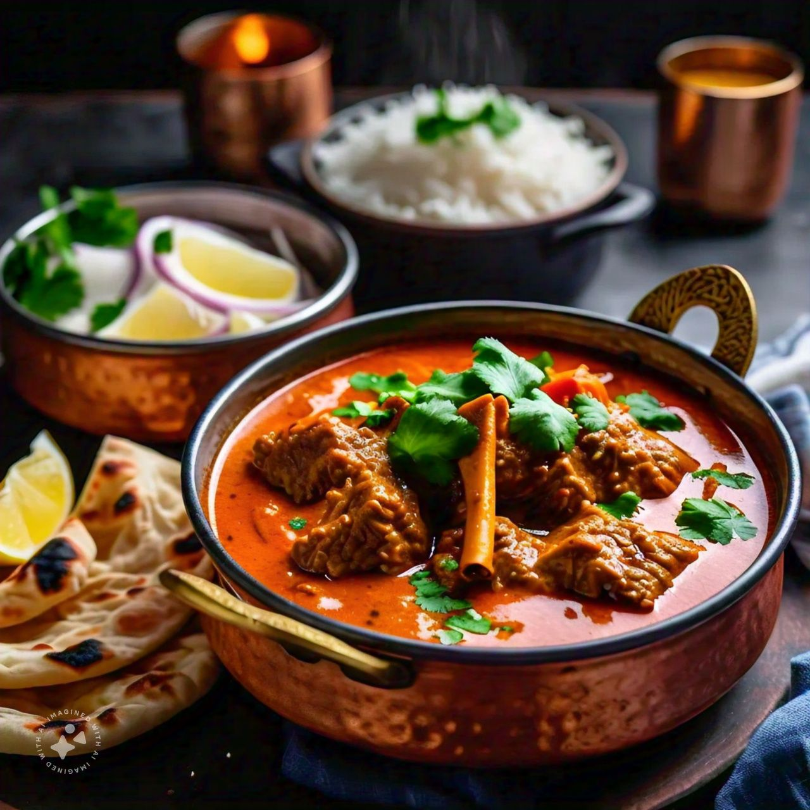
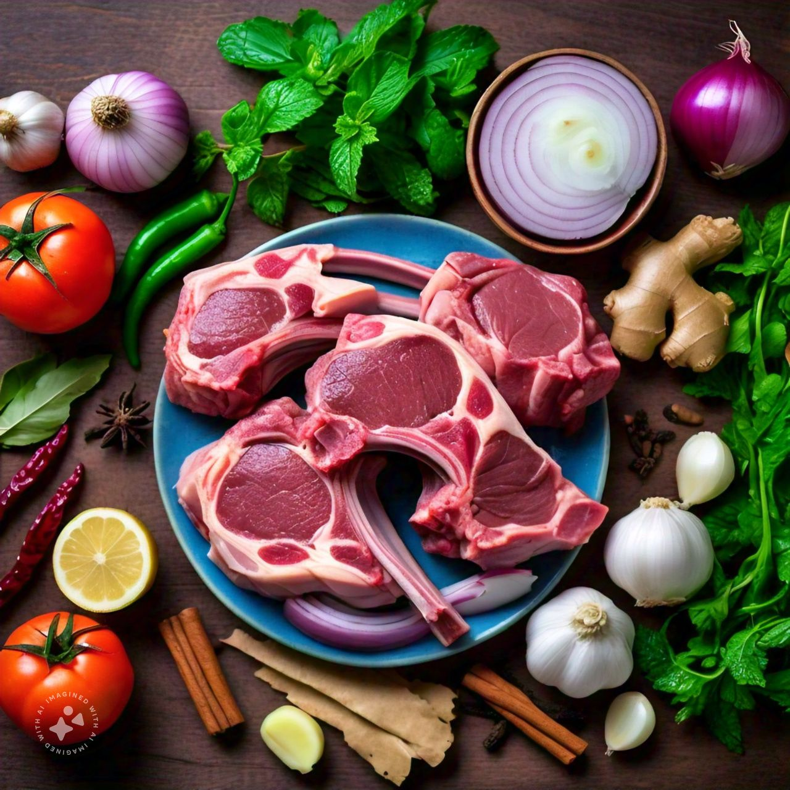

Tomato Pasta
Butter Chicken
Chicken Chow Main
Chicken Marsala
Lamb Curry
Lemon Chicken Piccata
Gourmet Delights
Global Flavors
Sweet Treats
Lamb Curry
Lamb curry is a rich, flavorful dish that features tender
pieces of lamb simmered in a spicy, aromatic gravy.The base of the curry
often includes onions, garlic, and ginger, which are sautéed to develop a
deep, savory foundation.The result is a comforting, hearty meal with a
perfect balance of spicy, savory.



- Prep Time:25 minutes
- Cook Time:35 minutes
- Total Time:60 minutes
-
- For the Curry:
-
Lamb: 1.5 to 2 pounds of lamb, cut into bite-sized chunks (shoulder or
leg works well)
- Onion: 1 large onion, finely chopped
- Garlic: 4-5 cloves, minced
- Ginger: 1 tablespoon, minced or grated
- Tomatoes: 2 medium tomatoes, chopped, or 1 can of diced tomatoes
- Yogurt: 1/2 cup (optional, for a richer, creamier sauce)
-
Cooking Oil: 2-3 tablespoons (vegetable oil, ghee, or coconut oil)
- Salt: to taste
- Fresh Cilantro: for garnish
- Potatoes: 1-2 medium, peeled and cut into chunks
- Cumin Seeds: 1 teaspoon
- Coriander Powder: 2 teaspoons
- Turmeric Powder: 1 teaspoon
- Garam Masala: 1-2 teaspoons
- Chili Powder: 1 teaspoon (adjust to taste)
- Paprika: 1 teaspoon (optional, for color)
- Cinnamon Stick: 1 small piece
- Cardamom Pods: 2-3
- Cloves: 3-4
-
- Prepare Ingredients:
- 1️⃣
Chop the onion, garlic, and ginger. Cut the lamb into chunks if not
already done.
- 2️⃣Chop tomatoes or have canned tomatoes ready.
- Brown the Lamb:
- 1️⃣
Heat the oil in a large pot or Dutch oven over medium-high heat.
- 2️⃣
Add the lamb chunks in batches, searing them until browned on all
sides. Remove and set aside.
- Cook Aromatics:
- 1️⃣
In the same pot, add the cumin seeds, cinnamon stick, cardamom pods,
and cloves. Sauté for about 1 minute until fragrant.
- 2️⃣
Add the chopped onions and cook until they turn golden brown, stirring
occasionally (about 8-10 minutes).
- Add Garlic and Ginger:
- 1️⃣
Add the minced garlic and ginger. Sauté for another 2 minutes until
the raw smell disappears.
- Add Spices:
- 1️⃣
Add coriander powder, turmeric powder, chili powder, paprika (if
using), and salt. Stir well to combine with the onions, garlic, and
ginger.
- Incorporate Tomatoes:
- 1️⃣
Add the chopped tomatoes or canned tomatoes to the pot. Cook for 5-7
minutes until the tomatoes break down and the oil starts to separate
from the mixture.
- Combine Lamb and Simmer:
- 1️⃣
Return the browned lamb to the pot. Stir to coat the lamb with the
spice mixture.
- 1️⃣
Add enough water to cover the lamb (about 2 cups). Bring to a boil,
then reduce heat to low.
- Simmer:
- 1️⃣
Cover and simmer on low heat for 1.5 to 2 hours, or until the lamb is
tender. Stir occasionally and add more water if needed to maintain the
desired consistency.
- Optional Additions:
- 1️⃣
If using potatoes and carrots, add them about 30 minutes before the
curry is done, so they cook through but remain firm.
- 2️⃣Add peas in the last 10 minutes of cooking.
- Finish the gravy:
- 1️⃣
Stir in the yogurt (if using) and garam masala. Simmer for another 5
minutes.
- 2️⃣Adjust salt and spices as needed.
Garnish with fresh cilantro and Serve with hot with rice and naan or roti.Enjoy your flavorful and hearty lamb curry!